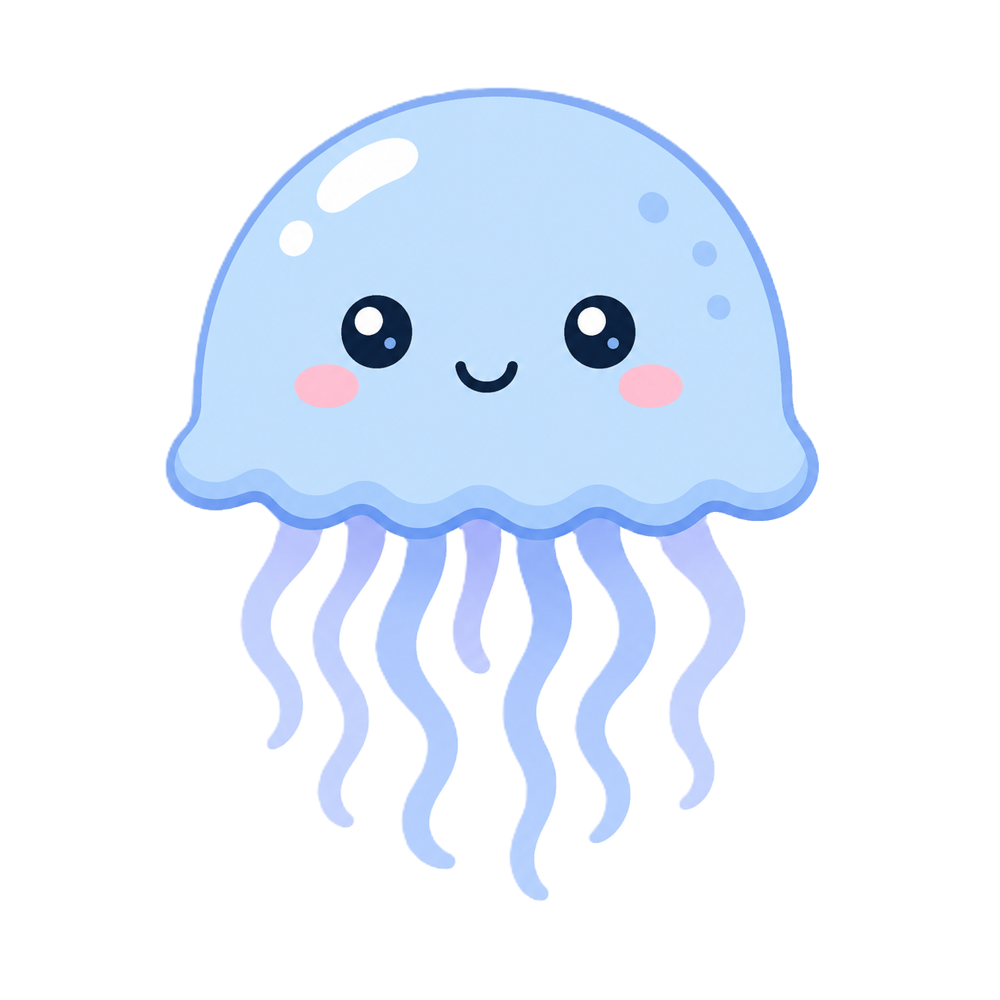

A jellyfish is a soft-bodied marine animal that has no bones, brain, or heart. It moves through the water by pulsing its bell-shaped body and drifting with ocean currents. Many jellyfish have long tentacles equipped with stinging cells that help them catch prey and defend themselves. They can be found in oceans all around the world, from shallow coastal waters to the deep sea. Despite their simple appearance, jellyfish have existed for more than 500 million years, making them one of the oldest animals on Earth.